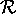
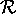
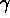
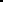
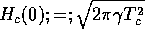

In Fig. 2, Hc2(theta) data are shown for two low-Tc C4KHg samples, one a gold Tc = 0.95 K specimen prepared at MIT, and one a Tc = 0.73 K whose critical fields were reported by Iye and Tanuma.[50] The dotted lines are fits to the formula:
where epsilon is the critical field anisotropy parameter of Morris, Coleman and Bhandari[40] defined by:
epsilon = Hc2,par/Hc2,perp
and Hc2(0°) is  . The fits were chosen
to minimize the residual parameter :[6]
. The fits were chosen
to minimize the residual parameter :[6]
where the errors sigmai are estimated as: sigmai = 0.1 Hexpi (1 + sin theta)
and nu is the number of free parameters. This form for the error is used to account for the fact that a small error in reading theta produces a much larger error in Hc2 when theta is near 90° than when theta is near 0°. Equation 1 describes the angular dependence of the critical field of anistropic 3D-coupled superconductors with uniaxial symmetry.[40,33] As Fig. 2 shows, this formula gives a good description of the Hc2(theta) data for low-Tc gold C4KHg samples.
Hc2(theta) data for two Tc = 1.5 K samples is shown in Fig. 3 along with two curves produced by Eq. 1. The curve marked by () is the residual-minimizing curve according to the definition in Eq. 2. Using other reasonable definitions of the errors sigmai in Eq. 2 (such as assuming an angle-independent error sigmai = sigma) did not produce a fit that goes through the peak of the data. If the fit is forced through the data at theta = 90°, the solid curve in Fig. 3 is the result. Extensive experience in trying to fit the Hc2(theta) data of Tc = 1.5 K C4KHg samples shows that Eq. 1 is simply inadequate as a detailed description of the experimental results.
There are several possibilities that come to mind as an explanation of the deviations from Eq. 1 that are displayed in Fig. 3. One possibility is that mosaic spread of the samples is affecting the data. The 2°-3° mosaic spread seen in neutron rocking curves can be accounted for by convolving Eq. 1 with a gaussian. This correction actually makes the agreement worse since the convolution broadens the Hc2(theta) peak. As the solid line in Fig. 3 shows, the fit that goes through the peak of the data is already much broader than the data.
Another possible extrinsic factor that could influence the
angular dependence measurements is a possible misalignment of
the sample during mounting. Detailed analysis of the
consequences of improper mounting[10] demonstrates that the only
effect of a tilted sample is to increase the measured value
of  . Because the Hc2(theta)
curves are quite flat near theta = 0°, the
effect of improper mounting for reasonable tilt angles (on
the order of 5°) is negligible.
. Because the Hc2(theta)
curves are quite flat near theta = 0°, the
effect of improper mounting for reasonable tilt angles (on
the order of 5°) is negligible.
A more interesting explanation for the deviations seen in Fig. 3 is suggested by the specific heat data of Alexander et al. [4] Using the linear specific-heat coefficient  = 0.95 mJ/(molK2) measured by Alexander, the zero-temperature thermodynamic critical field Hc can be estimated using the standard formula[55] . No superconducting transition was measured down to 0.8 K during the specific heat measurements,[4] so it is not clear that this linear specific heat coefficient is appropriate for a Tc =1.5 K sample. Nonetheless, an estimate of Hc can be made by assuming a (2 × 2)R0° structure. This procedure gives 112 gauss for Hc at T = 0 K. Using the usual quadratic form for the temperature dependence of Hc results in an estimate of 75 gauss for the thermodynamic critical field at a reduced temperature t == T/Tc = 0.57. Since, as Fig. 3 shows, 75 gauss is larger than the measured Hc2(theta) for theta less than about 70°, this value of Hc implies that superconductivity in Tc = 1.5 K C4KHg samples is type I in character for most applied field orientations.
When Hc is greater than Hc2, Hc will be measured as the upper critical field. Since Hc is a thermodynamic quantity, it is expected to be angle-independent. If type I superconductivity is present for some range of angles, one therefore expects a modified angular dependence of the form
Hc2,eff(theta) = Hc2 where
Hc2(theta) > Hc (type II
region);
and Hc2,eff(theta) = Hc where
Hc2(theta) < Hc (type I
region). (3)
This type of angular dependence has previously been observed[37,56] in C8K and in TaN. Using Eq. 1 for Hc2(theta), the modified form given by Eq. 3 has been fit to the angular dependence data for the Tc = 1.5 K C4KHg samples. In the fits to Eq.3, Hc was taken as a free parameter in addition to Hc2(0°) and epsilon. The resulting fit is shown in Fig. 4. Consultation of standard tables on statistics[6] shows that the addition of the third free parameter Hc is justified by the factor of 1.5 reduction in the residual index. The hypothesis of type I superconductivity in the higher-Tc pink C4KHg specimens therefore appears to be justified not only by the specific heat measurements of Alexander and coworkers,[4] but also by the improvement in the Hc2(theta) fits provided by the use of Eq. 3.